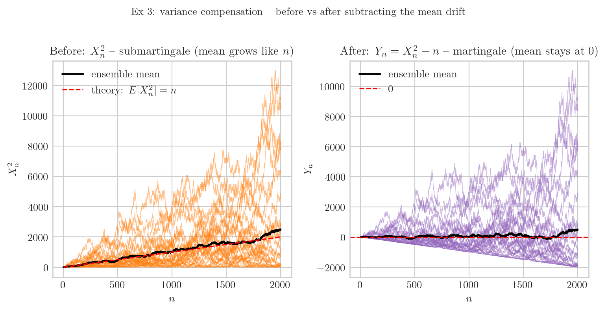
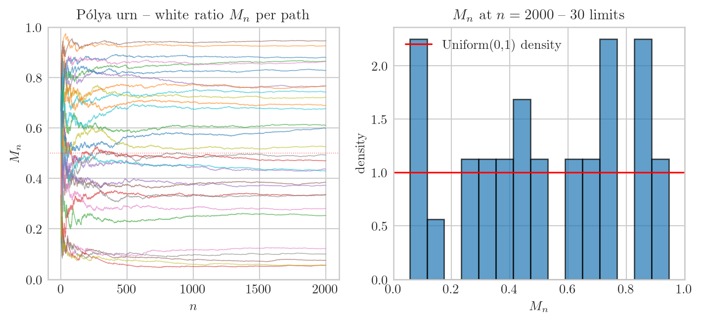

마팅게일은 “평균적으로 공정한 게임” 의 수학적 추상이다. 적분가능한 process \(\{X_n\}_{n \geq 0}\) 이 filtration \(\{\mathcal F_n\}\) 에 적응되어 있고 (\(X_n \in \mathcal F_n\), \(E|X_n| < \infty\)) 각 step 의 조건부 평균이 현재 값과 같을 때, 즉 \(E[X_{n+1} \mid \mathcal F_n] = X_n\), 을 만족할 때 \(\{X_n\}\) 을 \(\mathcal F_n\)-마팅게일이라 부른다. \(\geq\) 면 submartingale, \(\leq\) 면 supermartingale. 정의를 처음 보면 추상적인데, 시뮬로 한두 step 만 끊어 보면 어떤 process 가 마팅게일인지 즉각 와닿는다. 본 글은 6개 예제로 그 직관을 짚는다. 공통 헤더부터.
import numpy as npimport matplotlib.pyplot as pltplt.style.use("seaborn-v0_8-whitegrid")plt.rcParams.update({"text.usetex": True,"text.latex.preamble": r"\usepackage{amsmath,amssymb}","font.family": "serif","font.size": 10,"axes.titlesize": 11,"axes.labelsize": 10,})rng = np.random.default_rng(20260522)NPATH =30; T =2000t = np.arange(1, T +1)t[:5], t[-5:]
X1[:, -1].mean(), X1[:, -1].std() # 끝 시점 X_T 의 ensemble 평균·표준편차
(np.float64(9.8), np.float64(49.02611548960411))
ensemble 평균이 0 근처, 표준편차는 \(\sqrt{T} \approx \sqrt{2000} \approx 45\) 근처. 마팅게일은 평균 이 stationary 라는 것이지 표준편차 가 stationary 라는 게 아니다. path 자체는 \(\sqrt n\) 의 스케일로 흩어진다.
두 ensemble 평균이 ±0.10 의 기울기로 갈라진다. 마팅게일은 sub 와 super 사이의 균형점 — drift 가 정확히 0 인 한 줄.
-예제 3 — variance compensation. Fair walk 의 제곱 \(X_n^2\) 은 평균이 \(n\) 으로 자라므로 마팅게일이 아니다 (submartingale). \(n\) 만큼 빼주면 \(Y_n := X_n^2 - n\) 이 마팅게일이 된다. 먼저 보정 전\(X_n^2\) 부터.
S3 = X1 **2# X1 그대로 재사용 (Ex 1 의 fair walk)S3[:3, :10] # 첫 몇 step — 정수 제곱이라 0, 1, 4, 9, ...
Y3[:, -1].mean() # 끝 시점 ensemble 평균 — 0 근처 (마팅게일 보존)
np.float64(499.6)
ensemble 평균이 더 이상 자라지 않고 0 근처. 두 process 를 한 그림에서 비교.
fig, axes = plt.subplots(1, 2, figsize=(8, 4))# 보정 전: X_n^2 (submartingale, 평균 ≈ n)for k inrange(NPATH): axes[0].plot(t, S3[k], lw=0.5, alpha=0.5, color="C1")axes[0].plot(t, S3.mean(0), lw=1.8, color="k", label=r"ensemble mean")axes[0].plot(t, t, lw=1.2, color="r", ls="--", label=r"theory: $E[X_n^2] = n$")axes[0].set_title(r"Before: $X_n^2$ -- submartingale (mean grows like $n$)")axes[0].set_xlabel(r"$n$"); axes[0].set_ylabel(r"$X_n^2$"); axes[0].legend()# 보정 후: Y_n = X_n^2 - n (martingale, 평균 ≈ 0)for k inrange(NPATH): axes[1].plot(t, Y3[k], lw=0.5, alpha=0.5, color="C4")axes[1].plot(t, Y3.mean(0), lw=1.8, color="k", label=r"ensemble mean")axes[1].axhline(0, color="r", lw=1.2, ls="--", label=r"0")axes[1].set_title(r"After: $Y_n = X_n^2 - n$ -- martingale (mean stays at 0)")axes[1].set_xlabel(r"$n$"); axes[1].set_ylabel(r"$Y_n$"); axes[1].legend()fig.suptitle(r"Ex 3: variance compensation -- before vs after subtracting the mean drift", fontsize=10, y=1.02)plt.tight_layout(); plt.show()

왼쪽 — 빨간 점선 (\(y = n\)) 위에 검정 ensemble 평균이 정확히 따라간다. submartingale 의 drift 가 1 씩 쌓이는 것. 오른쪽 — 그 drift 를 \(-n\) 으로 정확히 상쇄하니 평균이 0 에 못박힌다. 두 process 는 path 차원에선 같지만 (좌·우 둘 다 같은 진동) drift 부분만 평행이동된다. 이 trick 의 일반화가 Doob-Meyer 분해 (submartingale = martingale + predictable increasing) — HST 분석에도 자주 쓰인다.
-예제 4 — P'olya urn. 흰 1, 검 1 로 시작. 매 step 무작위 추첨, 그 색 +1. 흰 비율 \(M_n := W_n/(W_n+B_n)\) 이 \([0,1]\) 위 마팅게일.
def polya_path(T): W, B =1, 1 Ms = np.empty(T)for n inrange(T):if rng.random() < W / (W + B): W +=1else: B +=1 Ms[n] = W / (W + B)return MsM4 = np.array([polya_path(T) for _ inrange(NPATH)])M4.shape
(30, 2000)
M4[:5, -1] # 30 path 중 첫 5 path 의 limit 값 — 0~1 사이 random
fig, axes = plt.subplots(1, 2, figsize=(7.5, 3.5))for k inrange(NPATH): axes[0].plot(t, M4[k], lw=0.6, alpha=0.6)axes[0].axhline(0.5, color="r", lw=0.6, alpha=0.5, ls=":")axes[0].set_title(r"P\'olya urn -- white ratio $M_n$ per path")axes[0].set_xlabel(r"$n$"); axes[0].set_ylabel(r"$M_n$"); axes[0].set_ylim(0, 1)axes[1].hist(M4[:, -1], bins=15, density=True, alpha=0.7, color="C0", edgecolor="k")axes[1].axhline(1.0, color="r", lw=1.2, label=r"Uniform(0,1) density")axes[1].set_title(rf"$M_n$ at $n={T}$ -- 30 limits")axes[1].set_xlabel(r"$M_n$"); axes[1].set_ylabel(r"density"); axes[1].set_xlim(0, 1); axes[1].legend()plt.tight_layout(); plt.show()

\([0,1]\) 위 uniformly bounded martingale → Doob 의 마팅게일 수렴 정리로 \(M_n \to M_\infty\) a.s. 각 path 가 자기만의 random limit 으로 떨어지고, limit 의 분포가 Uniform(0,1). “마팅게일이 수렴한다고 그 극한이 결정론적이라는 뜻은 아니다”.
-예제 5 — Doubling strategy.\(\epsilon_i = \pm 1\) fair, 베팅 \(a_n\) 은 직전 결과만 봄 (predictable). 잃으면 베팅 2배, 이기면 1로 reset. 누적 손익 \(X_n := \sum a_i \epsilon_i\) — predictable 베팅의 곱은 마팅게일 transform 으로 마팅게일 보존 (Durrett Thm 4.2.8).
위 행은 raw \(Z_n\) 의 폭발/멸종 거동, 아래 행은 정규화 \(M_n\) 의 마팅게일 거동. Supercritical 에서는 폭발 (\(M_n\) 이 finite random limit) 또는 멸종 (\(M_n \to 0\)). 양쪽 결과의 확률이 멸종 확률 — 마팅게일 평균 1 = 멸종확률·0 + 생존 path 의 평균 limit, 으로 식이 닫힌다.
-HST 연결 — Thm C 가 동작하는 예제. 에이의 abc오희석교수님공유용_v2.tex Theorem C (drift regime) 의 핵심 도구가 바로 이 마팅게일 분해다. \(X_s\) 가 \(b'_s\) 추첨 이전에 결정되므로 \(b'_s \perp (\mathcal F_{s-1}, X_s)\). HST height 를
왼쪽 — \(h(v_{\text{hub}},t)\) path 들이 빨간 점선 (이론 drift \(\bar b \rho_h t\)) 주위를 따라간다. 가운데 — 마팅게일 잔차 \(M_t^{(\text{hub})}/t\) 가 0 으로 수렴 (SLLN). 오른쪽 — \(\mathrm{SD}^2_{\text{hub-leaf}}(t)/t^3\) 이 Theorem C 상수 (빨간 점선) 로 수렴. 세 그림이 height 분해 → SLLN → Thm C 의 한 흐름을 한눈에 보여준다.
여섯 예제를 한 줄로 묶으면 — 마팅게일은 결정론적 stationary 가 아니라 ensemble-평균 stationary. 개별 path 는 자유롭게 진동하거나 폭발하거나 random limit 을 가질 수 있지만, 매 step 의 조건부 평균 변동이 정확히 0 이라는 그 한 조건이 모든 path 를 한 쇠줄로 묶는다. 도박, 인구 동력학, 강화학습, 금융, HST 의 height 잔차 등 어디서나 마팅게일이 자연스럽게 튀어나오는 이유다. “평균이 변하지 않는다” 라는 가장 약한 통제만으로 정리의 칼날이 살아남는다.
마팅게일이 살아남으면 어떤 일이 일어나는가 — SLLN, CLT, optional stopping, concentration — 은 다른 글의 주제 (260522_210331.html Durrett 4.5.3 + HST Theorem C Step 1 적용).